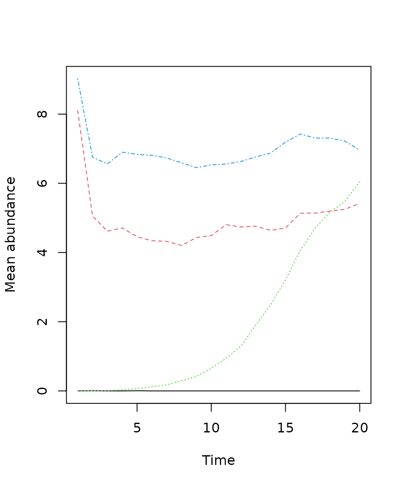
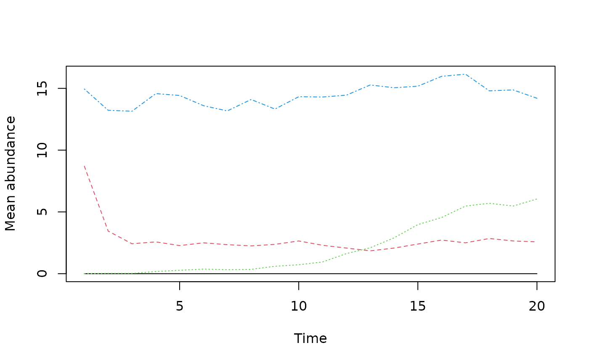
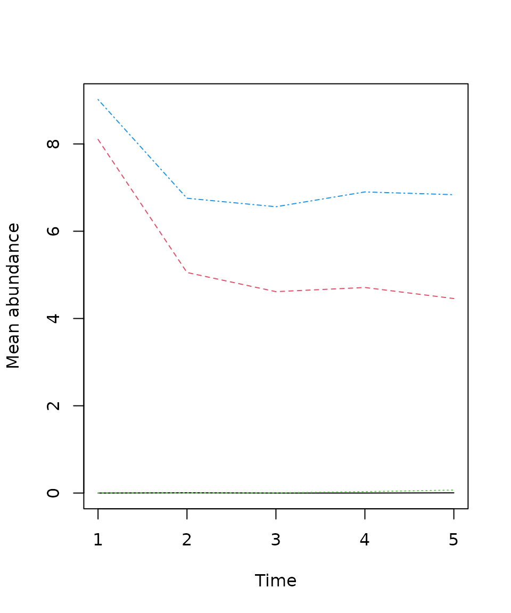
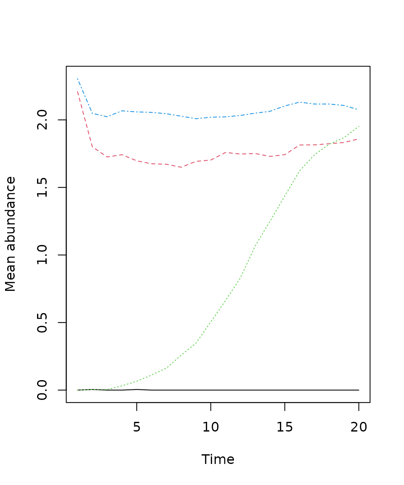

Community Time-Series Plot
plot_series.RdThis function plots a community time-series for a given location and time.
Arguments
- obj
An object of class
sim_com_results.- x
Indices for the x-dimension - first dimension of the
obj$N_map(default: full range).- y
Indices for the y-dimension - second dimension of the
obj$N_map(default: full range).- time
Indices for the time-dimension - third dimension of the
obj$N_map(default: full range).- species
Indices for the species - fourth dimension of the
obj$N_map(default: full range).- trans
An optional function to apply to the calculated mean series before plotting (e.g.,
log,log1p). Defaults toNULL(no transformation).- ...
Additional graphical parameters passed to
plot.
Value
Invisibly returns a matrix of the mean (and possibly transformed) abundance values for each species.
Examples
# Read simulation data from the mrangr package
simulated_com <- get_simulated_com()
# Plot
plot_series(simulated_com)

plot_series(simulated_com, x = 5:12, y = 1:5)

plot_series(simulated_com, time = 1:5)

plot_series(simulated_com, trans = log1p)
